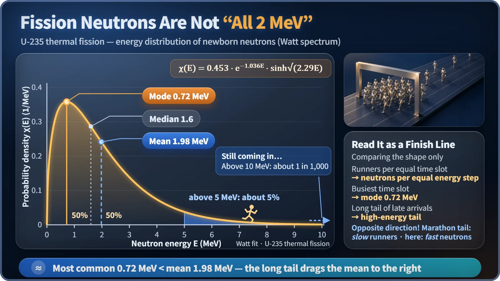
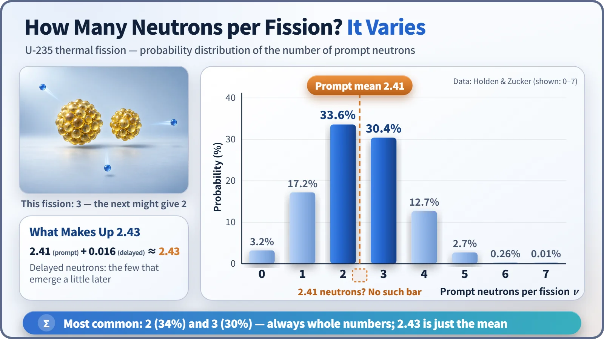

Nuclear Reactions & Fission · 036
Bunched Up Like a Marathon Finish — The Energy Spectrum of Fission Neutrons
The famous 2 MeV is only an average. Newborn fission neutrons follow the Watt spectrum, and even the count per fission jumps from 0 to 7.
Neutrons released in fission are not all born with the same energy. For uranium-235 they crowd around 0.7 MeV, average about 2 MeV, and trail a long tail beyond 10 MeV. The number of neutrons per fission varies as well, from none up to 6 or 7, averaging about 2.43. [1]
An hour at the finish line
Stand next to a marathon finish line for an hour and you'll notice a funny pattern. A handful of leaders come through, then things go quiet for a while. Then, at a certain stretch of the clock, runners start pouring in by the dozen. After that rush, the arrivals slowly thin out, but the stream never quite stops. Long after the crowd has passed, people are still trickling in one or two at a time.
Work out the average finishing time and you'll find it lands a little later than the busiest stretch. That long tail of late arrivals drags the average back.
The same shape turns up inside the atomic nucleus. The stars of this story are the neutrons that fly out when uranium-235 splits, and more precisely, the energy spectrum of fission neutrons.
The trap in "fission neutrons are 2 MeV"
Nuclear textbooks often say that fission neutrons have an energy of about 2 MeV. An MeV (mega-electronvolt) is a unit for the energy of very small particles, and a 2 MeV neutron moves at roughly 20,000 km per second, about 6.5% of the speed of light. At that pace it would cross the continental United States in about a quarter of a second.
But that 2 MeV is only an average. Measure the newborn neutrons one by one and their energies are all over the place. A graph that sorts them by how many are born at each energy is called the fission spectrum, and its shape is the finish-line scene all over again.
| Measure | Value (U-235 thermal fission) |
|---|---|
| Most common energy (mode) | about 0.7 MeV |
| Halfway point (median) | about 1.6 MeV |
| Average (mean) | about 2 MeV |
| Neutrons above 10 MeV | about 1 in 1,000 |

The peak sits on the left, but the right-hand tail stretches a long way, so the mean is pushed to the right of the peak. One caution about direction: in a marathon the tail is made of slow runners; here it is made of very fast (high-energy) neutrons. What the two share is the shape of the distribution, not which way fast and slow point. This graph also describes neutrons at the moment of birth. Once they have been slowed down and are wandering around inside a working reactor, their distribution looks quite different. [2]
This curve has a name and a formula
Physicists package this shape into a formula called the Watt spectrum. For uranium-235 split by a slow neutron, a standard approximation is:
χ(E) = 0.453 × e−1.036E × sinh(√(2.29E))
χ(E) is the probability of a neutron being born with energy near E (E in MeV). The e−1.036E part is a downhill slope: the higher the energy, the faster the probability drops. The sinh(√(2.29E)) part is an uphill slope that lifts the probability up from zero. Where the climb meets the descent, you get the peak near 0.7 MeV. [1] [4]
Why this shape? The two fragments of a split nucleus fly apart carrying a large amount of excess energy, and in far less than a trillionth of a second they "evaporate" neutrons, a bit like steam escaping from boiling water. That energy is shared out at random, and on top of it comes the fast motion of the fragments themselves, which spreads the distribution toward the right. The size of the fragment pair and how excited it is also change from one fission to the next, so the same energy can never come out every time. [2]
How many come out changes every time, too
Energy isn't the only thing that varies. The number of neutrons released per fission changes too. For thermal fission of uranium-235, the average number of neutrons per fission (ν, pronounced "nu") is about 2.43. Yet no fission ever releases 2.43 neutrons: a neutron can't be cut into pieces.
Measured data show that 2 neutrons come out about 34% of the time and 3 neutrons about 30% of the time, the two most common outcomes. One neutron appears about 17% of the time and four about 13%. About 3% of fissions release no neutrons at all, and on rare occasions 6 or 7 pour out. [3]

These bars average about 2.41. Add the roughly 0.016 delayed neutrons that emerge a little later after fission, and you reach 2.43. This spread is one reason reactor physicists pay as much attention to the scatter as to the average.
So why does a reactor need to know this?
First, this is where the bookkeeping for a chain reaction begins. If exactly 1 of the average 2.43 neutrons goes on to cause another fission, the reaction holds steady. The rest is a margin that can be absorbed or leak out of the core.
Second, the fact that neutrons are born fast shapes reactor design. Uranium-235 is far better at capturing slow neutrons and splitting. That's why reactors such as light-water reactors use water as a moderator, slowing neutrons from around 2 MeV down to around 0.025 eV, roughly one 80-millionth of the energy. [1]
Third, the right-hand tail can't be ignored. The very fast neutrons are rare, but they penetrate a long way, so they must be accounted for when designing shielding and when assessing how many neutrons a reactor vessel absorbs over decades of operation.
Key takeaways
Fission neutrons are not "2 MeV neutrons." They are born as a distribution that crowds around 0.7 MeV, averages 2 MeV, and trails a tail beyond 10 MeV. Their number also jumps around, anywhere from 0 up to 6 or 7 per fission, and 2.43 is just the average. That is why reactors are designed around the whole distribution, not a single number.